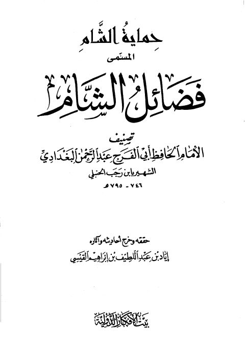

حماية الشام المسمى فضائل الشام
Authors: ابن رجب الحنبلي
Editors: إياد بن عبد اللطيف القيسي
Publishers: بيت الأفكار الدولية
Download Downloads need an internet connection.
- Country
- عمان، الأردن
- Edition
- 1
- Volumes
- 1
- Pages
- 208
- Type
- كتاب
- Category
- الحديث وعلومه
- Subcategory
- باقي مجموعات الحديث
Description
**▫️ العنوان: حماية الشام المسمى فضائل الشام** ▪️ المؤلف: #عبد_الرحمن_البغدادي_بن_رجب_الحنبلي ▫️ المحقق: #إياد_بن_عبد_اللطيف_القيسي ▪️ الناشر: #بيت_الأفكار_الدولية ▫️ بلد النشر: عمان، #الأردن ▪️ الطبعة: 1 ▫️ عدد الأجزاء: 1 ▪️ الصفحات: 208 ▫️ نوع الوعاء: #كتاب ▪️ التصنيف الرئيسي: #الحديث_وعلومه ▫️ التصنيف الفرعي: #باقي_مجموعات_الحديث ۪